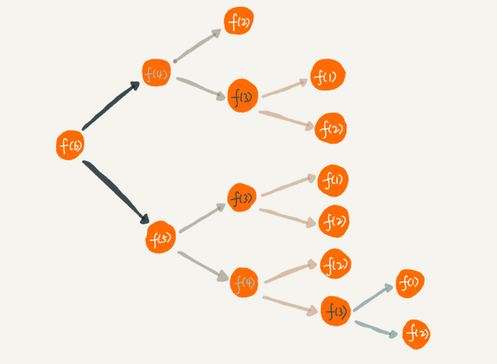

10 | 递归：如何用三行代码找到“最终推荐人”？
推荐注册返佣金的这个功能我想你应该不陌生吧？现在很多 App 都有这个功能。这个功能中，用户 A 推荐用户 B 来注册，用户 B 又推荐了用户 C 来注册。我们可以说，用户 C 的“最终推荐人”为用户 A，用户 B 的“最终推荐人”也为用户 A，而用户 A 没有“最终推荐人”。
一般来说，我们会通过数据库来记录这种推荐关系。在数据库表中，我们可以记录两行数据，其中 actor_id 表示用户 id，referrer_id 表示推荐人 id。

基于这个背景，我的问题是，给定一个用户 ID，如何查找这个用户的“最终推荐人”？ 带着这个问题，我们来学习今天的内容，递归（Recursion）！
如何理解“递归”？
从我自己学习数据结构和算法的经历来看，我个人觉得，有两个最难理解的知识点，一个是动态规划，另一个就是递归。
递归是一种应用非常广泛的算法（或者编程技巧）。之后我们要讲的很多数据结构和算法的编码实现都要用到递归，比如 DFS 深度优先搜索、前中后序二叉树遍历等等。所以，搞懂递归非常重要，否则，后面复杂一些的数据结构和算法学起来就会比较吃力。
不过，别看我说了这么多，递归本身可是一点儿都不“高冷”，咱们生活中就有很多用到递归的例子。
周末你带着女朋友去电影院看电影，女朋友问你，咱们现在坐在第几排啊？电影院里面太黑了，看不清，没法数，现在你怎么办？
别忘了你是程序员，这个可难不倒你，递归就开始排上用场了。于是你就问前面一排的人他是第几排，你想只要在他的数字上加一，就知道自己在哪一排了。但是，前面的人也看不清啊，所以他也问他前面的人。就这样一排一排往前问，直到问到第一排的人，说我在第一排，然后再这样一排一排再把数字传回来。直到你前面的人告诉你他在哪一排，于是你就知道答案了。
这就是一个非常标准的递归求解问题的分解过程，去的过程叫“递”，回来的过程叫“归”。基本上，所有的递归问题都可以用递推公式来表示。刚刚这个生活中的例子，我们用递推公式将它表示出来就是这样的：
f(n)=f(n-1)+1 其中，f(1)=1
f(n) 表示你想知道自己在哪一排，f(n-1) 表示前面一排所在的排数，f(1)=1 表示第一排的人知道自己在第一排。有了这个递推公式，我们就可以很轻松地将它改为递归代码，如下：
int f(int n) {
if (n == 1) return 1;
return f(n-1) + 1;
}
递归需要满足的三个条件
刚刚这个例子是非常典型的递归，那究竟什么样的问题可以用递归来解决呢？我总结了三个条件，只要同时满足以下三个条件，就可以用递归来解决。
1. 一个问题的解可以分解为几个子问题的解
何为子问题？子问题就是数据规模更小的问题。比如，前面讲的电影院的例子，你要知道，“自己在哪一排”的问题，可以分解为“前一排的人在哪一排”这样一个子问题。
2. 这个问题与分解之后的子问题，除了数据规模不同，求解思路完全一样
比如电影院那个例子，你求解“自己在哪一排”的思路，和前面一排人求解“自己在哪一排”的思路，是一模一样的。
3. 存在递归终止条件
把问题分解为子问题，把子问题再分解为子子问题，一层一层分解下去，不能存在无限循环，这就需要有终止条件。
还是电影院的例子，第一排的人不需要再继续询问任何人，就知道自己在哪一排，也就是 f(1)=1，这就是递归的终止条件。
如何编写递归代码？
刚刚铺垫了这么多，现在我们来看，如何来写递归代码？我个人觉得，写递归代码最关键的是写出递推公式，找到终止条件，剩下将递推公式转化为代码就很简单了。
你先记住这个理论。我举一个例子，带你一步一步实现一个递归代码，帮你理解。
假如这里有 n 个台阶，每次你可以跨 1 个台阶或者 2 个台阶，请问走这 n 个台阶有多少种走法？如果有 7 个台阶，你可以 2，2，2，1 这样子上去，也可以 1，2，1，1，2 这样子上去，总之走法有很多，那如何用编程求得总共有多少种走法呢？
我们仔细想下，实际上，可以根据第一步的走法把所有走法分为两类，第一类是第一步走了 1 个台阶，另一类是第一步走了 2 个台阶。所以 n 个台阶的走法就等于先走 1 阶后，n-1 个台阶的走法 加上先走 2 阶后，n-2 个台阶的走法。用公式表示就是：
f(n) = f(n-1)+f(n-2)
有了递推公式，递归代码基本上就完成了一半。我们再来看下终止条件。当有一个台阶时，我们不需要再继续递归，就只有一种走法。所以 f(1)=1。这个递归终止条件足够吗？我们可以用 n=2，n=3 这样比较小的数试验一下。
n=2 时，f(2)=f(1)+f(0)。如果递归终止条件只有一个 f(1)=1，那 f(2) 就无法求解了。所以除了 f(1)=1 这一个递归终止条件外，还要有 f(0)=1，表示走 0 个台阶有一种走法，不过这样子看起来就不符合正常的逻辑思维了。所以，我们可以把 f(2)=2 作为一种终止条件，表示走 2 个台阶，有两种走法，一步走完或者分两步来走。
所以，递归终止条件就是 f(1)=1，f(2)=2。这个时候，你可以再拿 n=3，n=4 来验证一下，这个终止条件是否足够并且正确。
我们把递归终止条件和刚刚得到的递推公式放到一起就是这样的：
f(1) = 1;
f(2) = 2;
f(n) = f(n-1)+f(n-2)
有了这个公式，我们转化成递归代码就简单多了。最终的递归代码是这样的：
int f(int n) {
if (n == 1) return 1;
if (n == 2) return 2;
return f(n-1) + f(n-2);
}
我总结一下，写递归代码的关键就是找到如何将大问题分解为小问题的规律，并且基于此写出递推公式，然后再推敲终止条件，最后将递推公式和终止条件翻译成代码。
虽然我讲了这么多方法，但是作为初学者的你，现在是不是还是有种想不太清楚的感觉呢？实际上，我刚学递归的时候，也有这种感觉，这也是文章开头我说递归代码比较难理解的地方。
刚讲的电影院的例子，我们的递归调用只有一个分支，也就是说“一个问题只需要分解为一个子问题”，我们很容易能够想清楚“递“和”归”的每一个步骤，所以写起来、理解起来都不难。
但是，当我们面对的是一个问题要分解为多个子问题的情况，递归代码就没那么好理解了。
像我刚刚讲的第二个例子，人脑几乎没办法把整个“递”和“归”的过程一步一步都想清楚。
计算机擅长做重复的事情，所以递归正和它的胃口。而我们人脑更喜欢平铺直叙的思维方式。当我们看到递归时，我们总想把递归平铺展开，脑子里就会循环，一层一层往下调，然后再一层一层返回，试图想搞清楚计算机每一步都是怎么执行的，这样就很容易被绕进去。
对于递归代码，这种试图想清楚整个递和归过程的做法，实际上是进入了一个思维误区。很多时候，我们理解起来比较吃力，主要原因就是自己给自己制造了这种理解障碍。那正确的思维方式应该是怎样的呢？
如果一个问题 A 可以分解为若干子问题 B、C、D，你可以假设子问题 B、C、D 已经解决，在此基础上思考如何解决问题 A。而且，你只需要思考问题 A 与子问题 B、C、D 两层之间的关系即可，不需要一层一层往下思考子问题与子子问题，子子问题与子子子问题之间的关系。屏蔽掉递归细节，这样子理解起来就简单多了。
因此，编写递归代码的关键是，只要遇到递归，我们就把它抽象成一个递推公式，不用想一层层的调用关系，不要试图用人脑去分解递归的每个步骤。
递归代码要警惕堆栈溢出
在实际的软件开发中，编写递归代码时，我们会遇到很多问题，比如堆栈溢出。而堆栈溢出会造成系统性崩溃，后果会非常严重。为什么递归代码容易造成堆栈溢出呢？我们又该如何预防堆栈溢出呢？
我在“栈”那一节讲过，函数调用会使用栈来保存临时变量。每调用一个函数，都会将临时变量封装为栈帧压入内存栈，等函数执行完成返回时，才出栈。系统栈或者虚拟机栈空间一般都不大。如果递归求解的数据规模很大，调用层次很深，一直压入栈，就会有堆栈溢出的风险。
比如前面的讲到的电影院的例子，如果我们将系统栈或者 JVM 堆栈大小设置为 1KB，在求解 f(19999) 时便会出现如下堆栈报错：
Exception in thread "main" java.lang.StackOverflowError
那么，如何避免出现堆栈溢出呢？
我们可以通过在代码中限制递归调用的最大深度的方式来解决这个问题。递归调用超过一定深度（比如 1000）之后，我们就不继续往下再递归了，直接返回报错。还是电影院那个例子，我们可以改造成下面这样子，就可以避免堆栈溢出了。不过，我写的代码是伪代码，为了代码简洁，有些边界条件没有考虑，比如 x<=0。
// 全局变量，表示递归的深度。
int depth = 0;
int f(int n) {
++depth；
if (depth > 1000) throw exception;
if (n == 1) return 1;
return f(n-1) + 1;
}
但这种做法并不能完全解决问题，因为最大允许的递归深度跟当前线程剩余的栈空间大小有关，事先无法计算。如果实时计算，代码过于复杂，就会影响代码的可读性。所以，如果最大深度比较小，比如 10、50，就可以用这种方法，否则这种方法并不是很实用。
递归代码要警惕重复计算
除此之外，使用递归时还会出现重复计算的问题。刚才我讲的第二个递归代码的例子，如果我们把整个递归过程分解一下的话，那就是这样的：

从图中，我们可以直观地看到，想要计算 f(5)，需要先计算 f(4) 和 f(3)，而计算 f(4) 还需要计算 f(3)，因此，f(3) 就被计算了很多次，这就是重复计算问题。
为了避免重复计算，我们可以通过一个数据结构（比如散列表）来保存已经求解过的 f(k)。当递归调用到 f(k) 时，先看下是否已经求解过了。如果是，则直接从散列表中取值返回，不需要重复计算，这样就能避免刚讲的问题了。
按照上面的思路，我们来改造一下刚才的代码：
public int f(int n) {
if (n == 1) return 1;
if (n == 2) return 2;
// hasSolvedList 可以理解成一个 Map，key 是 n，value 是 f(n)
if (hasSolvedList.containsKey(n)) {
return hasSovledList.get(n);
}
int ret = f(n-1) + f(n-2);
hasSovledList.put(n, ret);
return ret;
}
除了堆栈溢出、重复计算这两个常见的问题。递归代码还有很多别的问题。
在时间效率上，递归代码里多了很多函数调用，当这些函数调用的数量较大时，就会积聚成一个可观的时间成本。在空间复杂度上，因为递归调用一次就会在内存栈中保存一次现场数据，所以在分析递归代码空间复杂度时，需要额外考虑这部分的开销，比如我们前面讲到的电影院递归代码，空间复杂度并不是 O(1)，而是 O(n)。
怎么将递归代码改写为非递归代码？
我们刚说了，递归有利有弊，利是递归代码的表达力很强，写起来非常简洁；而弊就是空间复杂度高、有堆栈溢出的风险、存在重复计算、过多的函数调用会耗时较多等问题。所以，在开发过程中，我们要根据实际情况来选择是否需要用递归的方式来实现。
那我们是否可以把递归代码改写为非递归代码呢？比如刚才那个电影院的例子，我们抛开场景，只看 f(x) =f(x-1)+1 这个递推公式。我们这样改写看看：
int f(int n) {
int ret = 1;
for (int i = 2; i <= n; ++i) {
ret = ret + 1;
}
return ret;
}
同样，第二个例子也可以改为非递归的实现方式。
int f(int n) {
if (n == 1) return 1;
if (n == 2) return 2;
int ret = 0;
int pre = 2;
int prepre = 1;
for (int i = 3; i <= n; ++i) {
ret = pre + prepre;
prepre = pre;
pre = ret;
}
return ret;
}
那是不是所有的递归代码都可以改为这种迭代循环的非递归写法呢？
笼统地讲，是的。因为递归本身就是借助栈来实现的，只不过我们使用的栈是系统或者虚拟机本身提供的，我们没有感知罢了。如果我们自己在内存堆上实现栈，手动模拟入栈、出栈过程，这样任何递归代码都可以改写成看上去不是递归代码的样子。
但是这种思路实际上是将递归改为了“手动”递归，本质并没有变，而且也并没有解决前面讲到的某些问题，徒增了实现的复杂度。
解答开篇
到此为止，递归相关的基础知识已经讲完了，咱们来看一下开篇的问题：如何找到“最终推荐人”？我的解决方案是这样的：
long findRootReferrerId(long actorId) {
Long referrerId = select referrer_id from [table] where actor_id = actorId;
if (referrerId == null) return actorId;
return findRootReferrerId(referrerId);
}
是不是非常简洁？用三行代码就能搞定了，不过在实际项目中，上面的代码并不能工作，为什么呢？这里面有两个问题。
第一，如果递归很深，可能会有堆栈溢出的问题。
第二，如果数据库里存在脏数据，我们还需要处理由此产生的无限递归问题。比如 demo 环境下数据库中，测试工程师为了方便测试，会人为地插入一些数据，就会出现脏数据。如果 A 的推荐人是 B，B 的推荐人是 C，C 的推荐人是 A，这样就会发生死循环。
第一个问题，我前面已经解答过了，可以用限制递归深度来解决。第二个问题，也可以用限制递归深度来解决。不过，还有一个更高级的处理方法，就是自动检测 A-B-C-A 这种“环”的存在。如何来检测环的存在呢？这个我暂时不细说，你可以自己思考下，后面的章节我们还会讲。
内容小结
关于递归的知识，到这里就算全部讲完了。我来总结一下。
递归是一种非常高效、简洁的编码技巧。只要是满足“三个条件”的问题就可以通过递归代码来解决。
不过递归代码也比较难写、难理解。编写递归代码的关键就是不要把自己绕进去，正确姿势是写出递推公式，找出终止条件，然后再翻译成递归代码。
递归代码虽然简洁高效，但是，递归代码也有很多弊端。比如，堆栈溢出、重复计算、函数调用耗时多、空间复杂度高等，所以，在编写递归代码的时候，一定要控制好这些副作用。
课后思考
我们平时调试代码喜欢使用 IDE 的单步跟踪功能，像规模比较大、递归层次很深的递归代码，几乎无法使用这种调试方式。对于递归代码，你有什么好的调试方法呢？